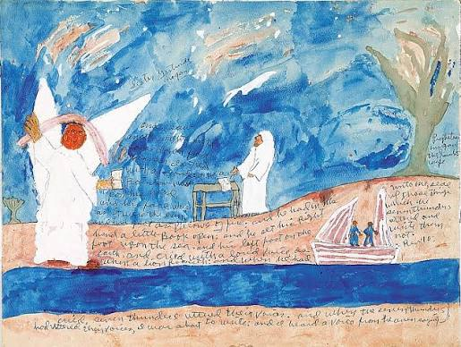

Prose
The Gospel According to Four Sisters

The bathroom smelled faintly of lemon pledge and of roses trying their best to out-scent the cleaning polish. Mr. Hudson had wiped the counters and cleaned the bathroom very early this morning. The old tile floor had been mopped multiple times this week after collecting a week’s worth of dust from the previous week, highlighted by the shoes of last Sunday and Wednesday’s revival sermon. Throughout the morning, there was an orderly and continued line of women coming and going from the sanctuary down the hall into the bathroom.
Four women occupied the space between the sinks and the mirrors at this moment.
Lady Laverne stood nearest the paper towels, whipping her hands. Seventy-six and proud of it. She wrote a hat that was the color of a dew green Earth. She had an assortment of hats that ran the color wheel in her closet which she pulled from, accordingly, for special occasions, and this one was her favorite. She had worn this hat many Sundays since the Kennedy administration; God bless him.
Mother Denise leaned against the counter beside her daughter. Denise was fifty-three, and was looking over her daughter Simone, twenty-four, who kept adjusting the sleeve of her dress because it was itching her. After her mother’s prompting, Simone had returned to the church within the past year-and-a-half after spending the previous four in school.
By the far stall door stood sister Patrice, forty-four, arms deep into her pocketbook, trying to find a mint. Patrice had been a steady figure in the church for decades, rising through the rank from a schoolgirl in Sunday School to now serving as superintendent of the program for the children. Though she had been raised in the church, she possessed an independent streak that endeared her to the children, if not always to the elders. Though, the Sunday School was primarily served for children.
For a moment nobody said anything. The choir outside swelled with the Spirit. From well beyond the sanctuary doors, you could hear voices climbing like they were trying to reach somewhere higher than the ceiling.
Laverne clicked her tongue softly. “Lord,” she said. “I never thought I would live to see such a day.”
Denise looked at her. “Which part?”
Miss Laverne met her eyes in the mirror.
“Pastor Bell in the ground,” Laverne said. “And a baby girl being the one who put him there.”
The girl wasn’t actually a baby, but nobody corrected her. Twenty-one, the news said. But in church years, that was still a baby. Denise sighed.
“Newspapers don’t know nothing,” Laverne said.
Patrice stopped focusing on her mint. “They know what they were told.”
Denise turned. “You believe all that?”
Patrice didn’t answer right away. She looked at the mirror instead, looking back at the four of them standing there like witnesses.
“They said she told the police he touched her,” Patrice said.
Miss Laverne shook her head hard enough to rattle the pins in her hat. “That man baptized half this church,” she replied.
“That ain’t what I was talking about,” Patrice said.
“He counseled Sam when he was drinking,” Denise added quickly. “Every Tuesday night for six months.”
“He paid my light bill a few times through the years,” Miss Laverne added. “Didn’t tell a soul.”
The choir outside hit a long note that trembled through the wall.
Simone spoke for the first time in a while. “My friend Jasmine knew the girl.”
Three heads turned. “She said she stopped coming to church a while ago.”
“Lots of people stop coming,” Denise said.
Simone shrugged. “She said she didn’t like the way Pastor looked at her.”
Miss Laverne let out a sound halfway between a laugh and a scoff. “That girl shot a man three times,” she said. “You don’t do that over a look.”
Denise spoke again. “You don’t shoot somebody three times unless something in you already broke.”
Patrice rubbed her temple. “Or somebody broke you.”
“You talking like you knew her,” said Denise back at Patrice.
“I’m talking like I know of men who want women,” said Patrice.
Miss Laverne lifted her chin. “I knew Pastor Bell thirty-eight years.”
Patrice looked at her. “You knew him in the pulpit.”
“That’s the same man,” replied back, Laverne.
“Sometimes it ain’t,” Patrice shot back.
The door swung open. All four women straightened up like somebody had tugged invisible strings. Sister Colleen bustled in carrying a purse big enough to hold a loaf of bread, which is particularly why she liked that purse.
“Well, hey ladies!” she said. The tension in the room vanished like somebody flipped a switch.
“Hey now,” Denise said with a smile.
“Service has been beautiful,” Sister Colleen said, heading to the mirror.
“Mmm-hmm,” Miss Laverne hummed. “Choir sounded like heaven.”
Simone handed her a paper towel. “You look really nice today, Sister Colleen.”
“Oh you’re too kind, child,” she laughed.
A few seconds of water running. Paper towels rustling. “Well, y’all enjoy the rest of your Sunday.”
“You too now,” said Denise.
Door closes. Silence again. It took a handful of seconds.
Patrice spoke first. “Three times,” she repeated.
Denise shifted. “You saying he did it?”
“I’m saying we don’t know he didn’t.”
Simone stared at the floor tiles. “You ever notice,” she said slowly, “how when girls stopped coming around, nobody asked why?”
Her mother frowned. “What girls?”
Simone shrugged again. “Just… girls.”
Miss Laverne waved a hand. “Child, people leave church all the time.”
“Yeah,” Simone said. “But they don’t usually leave crying in the parking lot.”
The older woman paused. “Who you see crying?”
Simone opened her mouth, and then the door opened again.
A teenager slipped in with earbuds and a choir robe half hanging off her shoulder. The conversation evaporated. Denise smiled bright.
“Y’all did wonderful up there.”
The girl grinned. “Thank you!”
Miss Laverne beamed. “Sounded like angels.”
“Thank you, ma’am.”
The girl fixed her robe, tossed a paper towel, and hurried out again. The door closed shut.
Nobody spoke for a moment. From the sanctuary, one of the associate pastors had begun the closing prayer.
Miss Laverne finally said what had been sitting in the room the whole time. “If he did it,” she said softly, “all that good he did don’t erase it.”
Denise looked at herself in the mirror. Her voice came out smaller than before. “And if he didn’t?”
Miss Laverne exhaled slowly. “Then that girl carrying something heavy the rest of her life.”
Simone spoke last. “Either way,” she said, “somebody was hurting before that gun ever came out.”
The choir began humming again, soft like a lullaby.
Miss Laverne reached into her purse and took out a small compact mirror even though she was already standing in front of one. Old habits.
“I remember when Pastor Bell first came here,” she said.
Nobody interrupted her.
“This church had torn-up carpet and two fans that barely turned,” she said. “Roof leaked right over the first rows of the pew.” “That man got us air-conditioning, new choir robes, and a new van for the youth ministry.”
Denise nodded.
“He married me and James.”
“He baptized you, Ms. Simone,” Miss Laverne added, looking at the youngest in the assembly.
Simone shifted slightly. “He used to squeeze my cheeks after Sunday school.”
“That’s what pastors do,” Laverne said quickly.
Simone didn’t argue. She lowered her eyes to look at the floor tiles.
Patrice watched them all through the mirror.
“You ever notice something,” she said.
“What?” Denise asked.
“How every story about him starts good.”
Miss Laverne frowned. “Because he was good.”
Patrice shook her head slowly. “I’m saying that’s where we always start.”
The sanctuary erupted in a loud Amen. Clapping could be heard. Footsteps passed outside the bathroom door.
Miss Laverne sighed. “You know what I keep thinking?”
“What?” Denise asked.
“That girl sat in them pews too.”
The room went still.
Simone nodded slightly. “She did.”
“And she heard the same sermons we did, and she still killed that man.”
“Yes she did,” Patrice said.
Miss Laverne folded her paper towel carefully like it was something delicate.
“Lord,” she murmured again. “Whole thing just feels… crooked.”
Denise glanced toward the door. “You think the church gonna talk about it?”
Patrice gave a short laugh. “This church?”
Simone said softly, “They already talking about it.”
“Not from the pulpit they won’t,” Patrice said.
The sanctuary doors opened somewhere down the hall. The sound of people leaving drifted closer: laughter and the sound of shoes against floor.
Miss Laverne adjusted her hat. “Sometimes,” she said slowly, “God lets the truth sit quiet a while.”
Patrice looked at her. “And sometimes people help it stay quiet.”
More footsteps passed outside.
Simone finally stopped tugging at her sleeve. “Jasmine told me something else,” she said.
Her mother looked tired suddenly. “What?”
Simone hesitated. “She said the girl tried to tell somebody once.”
The other three women looked at her.
“Who?” Denise asked.
Simone shook her head. “She didn’t know. Just said somebody in the church.”
Miss Laverne stared at the mirror for a long time. She answered back to the reflection, almost to comfort herself, “I know that it wasn’t me.”
Nobody answered that.
The bathroom door opened again, and two women’s voices spilled in with laughter. The four women straightened up again, like the conversation folded itself away.
“Oh, hey ladies,” one of them said.
“Afternoon,” Denise answered.
“Child that choir wore me out,” the other woman laughed.
Miss Laverne chuckled politely. “Sounded like the Spirit moving.”
The six together chatted about nothing for a minute. Potato salad, somebody’s grandbaby, the weather warming up. Then the two women who last entered, left the bathroom.
The door shut. Quiet returned like something that had been waiting. Outside, the air filled with distant voices; somebody calling for a child named Marcus.
Patrice spoke again.
“You know who I keep thinking about?”
“Who?” Denise asked.
“His wife.”
Miss Laverne nodded slowly.
“First Lady Evelyn.”
Nobody said anything for a moment.
Everybody in the church knew First Lady Evelyn Bell. She sat front row every Sunday in hats that were the color of gemstones. She had not come to church since the shooting.
“They say she’s staying with her sister,” Denise said quietly.
“Somewhere upstate,” Miss Laverne added.
Patrice leaned against the wall.
“You think she knew?”
Denise frowned. “Knew what?”
Patrice didn’t answer right away.
Simone said it instead. “If he was doing something.”
Miss Laverne stiffened. “That woman stood by that man for a long time.”
“That don’t mean she knew everything,” Patrice said.
Denise rubbed her arms.
“Marriage got rooms people don’t open,” said Laverne.
Simone said softly, “Sometimes men lock the doors.”
The fluorescent lights hummed overhead. One of the sinks dripped.
Miss Laverne’s voice softened. “First Lady Evelyn loved him.”
Patrice nodded. “I believe that.” “But love don’t make people saints,” she added.
Denise looked toward the door again like she expected someone else to walk in.
“You ever see the girl?” Patrice asked Simone.
Simone nodded slowly.
“A couple times.”
“What was she like?”
Simone thought about it. “Quiet,” she said.
Miss Laverne nodded. “Lots of quiet girls in church.”
Simone continued. “She used to sit near the back with her aunt.”
“What aunt?” Denise asked.
“I think her name was Carla.”
“Carla Washington,” said Miss Laverne. “She sang alto.”
“That’s her,” Simone said.
Denise frowned. “Well where she been?”
“Moved away,” Miss Laverne said. “Last year sometime.”
Patrice raised her eyebrows. “Funny timing.” Nobody said anything.
Outside, the hallway was filled with louder voices now. Church letting out. The bathroom suddenly felt smaller.
Miss Laverne adjusted her hat again. “You know what I hate most about this?”
“What?” Denise asked.
“That we may never know the truth.”
Patrice looked at the mirror. “Oh we’ll know.”
“How?”
“Because the truth always leaks,” Patrice said. She gestured at the ceiling. “Just like that old roof used to.”
Simone laughed quietly. Miss Laverne and Denise didn’t.
The door opened once more. Three teenage girls spilled in giggling, smelling like perfume and hair spray. The conversation folded again.
“Oh excuse us,” one girl said.
“Y’all fine,” Denise smiled.
The girls crowded the mirror fixing lip gloss.
“Service was good today,” one of them said.
“Mmm,” Miss Laverne nodded politely. Patrice stood silent.
The girls left as quickly as they came. The bathroom settled again.
Miss Laverne finally sighed. “Well,” she said.
“Well what?” Denise asked.
“Well the Lord sees everything.”
Patrice looked at her. “And so do people if they want to look.”
Simone stared at the mirror now instead of the floor.
Her reflection looked older than twenty-four years that she had.
“What if,” she said slowly, “both things are true.”
“What things?” Denise asked.
“That he helped people,” Simone said. “And hurt somebody.”
The room held that thought for a long moment.
Miss Laverne closed her compact. “That would be the saddest thing of all.”
Outside someone began playing the piano again. Soft. Slow.
In the mirror the four women stood there together, each holding a different version of the same man. And none of them knew which one would outlive the others.
Matthew Johnson is the author of multiple poetry collections, including Jackie Robinson's Real Gone: Baseball Poems of New York (Cornerstone Press). His poetry has appeared in Apple Valley Review, Heavy Feather Review, Langston Hughes Review, London Magazine, and elsewhere. A recipient of multiple Pushcart Prize and Best of the Net nominations, support from the Emily Dickinson Museum and Hudson Valley Writers Center, as well as a finalist for the Diverse Voices Book Award (Grand View University) and E.E. Cummings Poetry Award (New England Poetry Club), he’s managing editor of Portrait of New England and the poetry editor of The Twin Bill.